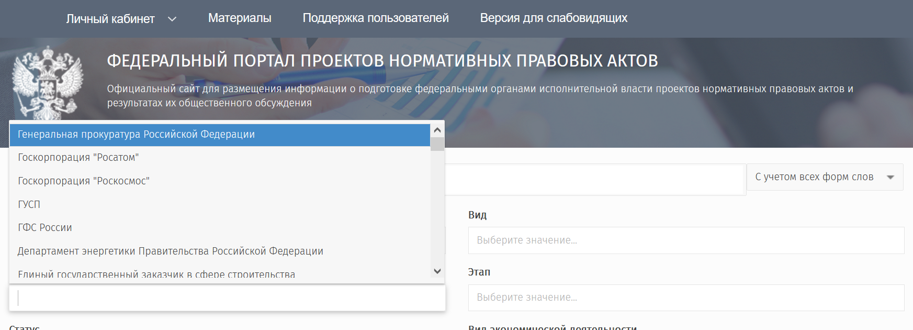

Краткое изложение
Государство тратит на финансирование некоммерческих организаций более 500 миллиардов рублей в год и, в то же время, большая часть этих средств идёт на финансирование учрежденных органами власти и созданными ими организациями. Эти организации создаются взамен бюджетных учреждений, выведены из-под регулирования законами о государственных закупках, закупках корпораций и бюджетных учреждений, закона о госслужбе, требований по противодействию коррупции и требований по обязательному раскрытию информации. Несмотря на то, что доходы подобных организаций значительно превышают доходы любых НКО, где нет государственных учредителей многие из подобных государственных НКО вносятся в реестры социально-ориентированных некоммерческих организаций и получают дополнительные льготы.
Несмотря на частичное сохранение контроля государства за деятельностью подобных организаций через использование механизмов казначейского контроля за выданными субсидиями, эти организации выведены из под общественного контроля и, в целом, их прозрачность далека от лучших практик прозрачности сложившихся в российском государственном управлении.
Несмотря на широкий спектр задач выполняемых государственными организациями, в виду масштабов их финансирования и специфики их деятельности, в том числе, в виду того что они были явным образом исключены из ряда регуляторных документов, эти организации могут рассматриваться как отдельный субъект регулирования.
Государственная политика в отношении государственных НКО требует значительного усовершенствования в направлениях обеспечения их открытости, подотчетности гражданам, использованием стандартов открытости созданных для некоммерческого сектора, раскрытием сведений о их закупках и заключённых контрактах, публикацией деклараций о доходах.
Введение
Эта книга основана на данных собранных в 2018-2020 годах. С 2020 года объекм данных о госфинансировании НКО, субсидиях и учредителях неуклонно сокращался в открытом доступе, поэтому эта книга и приводимые в ней цифры относятся к 2018-2020 годам. Обязательно прочитайте подробнее об ограничениях.
Эти организации создаются с различными целями, где-то для решения специализированных задач которые невозможно решить каким-либо иным образом кроме создания НКО, где-то в целях избежать использования законов о государственном, муниципальном и корпоративном заказах (так называемые 44-ФЗ и 223-ФЗ), а в где-то в целях избежать иного регулирования.
Эти организации, как правило, напрямую или косвенно получают поддержку напрямую из федерального или региональных бюджетов или же, реже, иным образом через государственный и муниципальных заказ или благотворительность государственных корпораций и компаний.
Государственная поддержка некоммерческих организаций в России объёмна и разнообразна и государственные НКО получают существенную, иногда, критически значимую долю этого финансирования.
Только в 2019 году прямая поддержка некоммерческих организаций только из федерального бюджета составила 152,5 миллиарда рублей, 1% от общего объёма расходов и 349 миллиарда рублей, 2.2% от общего объёма расходов субъектов федерации и входящих в них муниципальных образований). В общей сложности это более 501,5 миллиарда рублей, потраченных только за 2019 год.
Многие некоммерческие организации получают прямую материальную поддержку в рамках социальных программ государственных предприятий и публичных компаний, принадлежащих частично или полностью органам власти.
Помимо этого, многие некоммерческие организации являются активными участниками конкурентных отношений, выступая в качестве подрядчиков по государственным и муниципальным контрактам в рамках 44-ФЗ, 223-ФЗ и 615ПП. В том числе, зачастую эти конкурентные отношения основываются на приобретении товаров, работ и услуг у этих организаций закупкой у единственного исполнителя.
Однако эта поддержка распределена неравномерно, большая часть средств идёт на поддержку и финансирование некоммерческих организаций, либо учрежденных органами власти и организациями бюджетной сферы, либо имеющих доминирующее влияние органов власти, как через органы управления, так и через доминирующую роль государственного финансирования в появлении и существовании данных организаций.
Данное явление " государственных НКО" или " подведомственных НКО', некоммерческих организаций учрежденных или находящихся под значительным влиянием государства, значительно отличается от такого явления как государственно-ориентированные организации , получающих от органов власти финансовые и административные ресурсы, но сохраняющие формальную автономность и, относительно диверсифицированные источники доходов.
Подобные государственные НКО не имеют отдельного регулирования как либо затрагивающего их деятельность, их хозяйственная деятельность и трудовые отношения выведены из под требований контрактной системы (44-ФЗ, 223-ФЗ и иные связанные НПА) и из под закона о государственной гражданской службе 79-ФЗ.
Законодательное регулирование государственных закупок собрано в двух федеральных законах - 44-ФЗ для регулирование закупок за счет бюджетных средств и 223-ФЗ для регулирования закупок госпредприятий, госкомпаний и естественных монополий. С помощью 44-ФЗ законодатель жестко регламентирует закупки, требуя соблюдения процедур грозящих суровыми наказаниями. В 223-ФЗ требования значительно мягче. Но некоммерческие организации, за редким исключением, не подпадают ни под один из них. Подробнее в разделе государственные и муниципальные закупки.
Государственные НКО не имеют обязательств по прибыльности, по раскрытию информации о деятельности по аналогии с акционерными обществами и вправе устанавливать любую зарплатную сетку и режим работы для своих сотрудников без каких-либо нормативно-правовых ограничений имеющихся, к примеру, у бюджетных учреждений.
Всё это сделало привлекательным использование данных организационно правовых форм для создания органами власти специализированных некоммерческих организаций, в том числе, тех которые получают явно обозначенные функции и полномочия, как закреплённые в нормативно-правовых актах, так и в "менее формальных" документах поручения Правительства РФ, Президента РФ и поручений органов исполнительной власти.
В этой книге сделан лишь первичный, базовый обзор такого явления как государственные НКО, рассматриваются объёмы их финансирования и особенности регулирования, а также даётся приблизительная оценка масштаба данного феномена и числа организаций данного типа.
Классификация государственных НКО
Государственные НКО создаются с разными целями, разными организациями, имеют разную правовую природу. Какие-то организации создаются решением федерального или региональных правительств, какие-то решением их учредителя государственной корпорации или компании, другие создаются в некоммерческой форме поскольку для данного вида деятельности, например, образовательной никакая иная форма существования кроме как создания некоммерческой организации невозможна.
В этой главе предпринимается попытка построить базовую классификацию по типам таких организаций.
В России юридические лица разделяются по секторам экономики, организационно-правовым формам в ЕГРЮЛ, формам собственности и другим критериям. Эти способы классификации помогают в решении задачи понимания того как устроен этот сектор государства/некоммерческого сектора, но не могут, сами по себе, дать ответа на вопрос о целях их создания и предназначения.
Государственные НКО обладают как минимум двумя особыми формами классификации связанными с их отношениями с государством (учредителями) что можно разделить на то в каком роде государство выступает как учредитель и как регулятор. Также госНКО можно рассмотреть по критерию их функциональной роли, то в целях которой каждая из организаций была создана и действует.
Далее рассмотрим основные виды классификации госНКО:
По участию государства
Для многих некоммерческих организаций государство, зачастую, принимает непосредственное участие в их создании и управлении. Представители государства могут назначать директоров компаний, формировать правление, участвовать в наблюдательном совете некоммерческой организации. Всё это создаёт разные степени приближенности данной организации к системе государственного управления.
В связи с этим, все государственные НКО можно достаточно чётко определить по степени их взаимодействия с органами государственного управления․
Государственные НКО можно разделить, на следующие группы по участию гос-ва:
- учрежденные органами власти
- учрежденные госучреждениями и предприятиями
- учрежденные коммерческими компаниями управляемыми органами власти
- имеющие закрепленный нормативно-правовой статус
- имеющие госслужащих в органах управления
- имеющие преимущественное финансирование из государственных бюджетов
Организации, учреждённые органами власти
К подобным организациям относятся некоммерческие организации непосредственными учредителями которых являются органы государственного управления такие как:
- Правительство Российской Федерации
- Федеральные органы исполнительной власти
- Органы власти субъектов федерации
- иные органы власти (органы прокуратуры, законодательные собрания, суды и так далее).
Пример организации учрежденной органом власти является Аналитический центр при Правительстве Российской Федерации имеющий юридическую форму в виде Автономной некоммерческой организации созданной в январе 2015 года на базе ФГБУ "Аналитический центр при Правительстве Российской Федерации".
Создание АНО "Аналитический центр при Правительстве Российской Федерации" было утверждено 27 декабря 2014 г. распоряжением Правительства РФ от 27 декабря 2014 г. № 2751-р. Существовавшее ранее ФГБУ "Аналитический центр при Правительстве Российской Федерации" было позже ликвидировано.
Важным изменением после реорганизации стала недоступность закупок и контрактов организации. Если закупки ФГБУ публиковались, последний контракт 1770866067015000012 был заключен в апреле 2015 г., то контракты АНО оказались выведены из под 44-ФЗ и 223-ФЗ
Организации, учрежденные бюджетными учреждениями, унитарными предприятиями и иными организациями в подчинении органов власти
Некоммерческие организации могут быть учреждены государственными учреждениями, унитарными предприятиями, другими государственными учреждениями, коммерческими предприятиями и другими НКО в подчинении органов власти.
Подобные организации создаются государственными корпорациями и их государственными учреждениями.
Некоммерческая организация Фонд поддержки жилищного строительства была учрежден ФГУП "НИИ Измерительных Систем Им.Ю.Е.Седакова" до его ликвидации находившийся в подчинении Госкорпорации Росатом.
Многие организации создаваемые бюджетными учреждениями имеют специализированные задачи. В виду того что в России образовательная деятельность относится к некоммерческой, а большая часть государственных ВУЗов имеет статус федерального государственного бюджетного или автономного учреждения, то при многих ВУЗах создаются специальные фонды поддержки и работы с выпускниками.
Фонд развития Физтеха учрежден Федеральным государственным автономным образовательным учреждением высшего образования «Московский физико-технический институт (национальный исследовательский университет)».
Цель создания фонда: Развитие социальных инициатив и образовательных программ, поддержка научных исследований
Организации учрежденные коммерческими компаниями со значительной долей участия в государства в управлении
Некоммерческие организации, учреждённые коммерческими компаниями, в которых государственные органы имеют полное или преимущественное управление. Часто это крупные предприятия более чем на 51% принадлежащие государству, но имеющие, также, независимых директоров, миноритарных акционеров
Пример, медицинское частное учреждение "Отраслевой клинико-диагностический центр ПАО Газпром", учреждено ПАО Газпром и является некоммерческой организацией.
Организации, имеющие закрепленный нормативно-правовой статус
Некоммерческие организации, которые могут не иметь государства в учредителях, но имеющие функции/роль/задачи явным образом, закрепленные в нормативно-правовых актах, поручениях Правительства РФ или Президента РФ или иных поручениях органов власти.
Фонд информационной демократии, оператор сайта Российской общественной инициативы (roi.ru) имеет одного учредителя физическое лицо и закрепленный статус через указ Президента Российской Федерации от 04.03.2013 г. № 183 О рассмотрении общественных инициатив, направленных гражданами Российской Федерации с использованием интернет-ресурса «Российская общественная инициатива».
Фактически организация имеет поручение и некую непубличную форму государственной финансовой поддержки, хотя и формально, по учредителю, данная организация государственной не является.
Таких организаций, относительно, немного. В практике российской государственной политики государство редко передаёт какие-либо функции или полномочия не сохраняя прямого полного или частичного контроля. Можно лишь предполагать наличие инструментов неформального контроля за подобными организациями при выдаче им "государственного мандата".
Организации в органах управления которых присутствуют действующие государственные служащие
В ряде случаев представители государства могут принимать участие в управлении некоммерческими организациями. Это участие может быть прямым - непосредственное участие в роли руководителя или члена правления, может быть непрямым - участие в структурах наблюдательного совета, а может сложно доказуемым, по факту предыдущих мест работы.
Последний случай относится скорее к области лоббизма и влияния, а вот первые два - участие в управлении и участие в наблюдательных советах можно рассматривать как присутствие государства в деятельности подобной организации.
При том что государственная служба существенно ограничивает в возможности в участии в управлении каким-либо юридическими лицами, в законе о государственной службе, именно для некоммерческих организаций есть исключение.
участие на безвозмездной основе в управлении некоммерческой организацией (кроме участия в управлении политической партией, органом профессионального союза, в том числе выборным органом первичной профсоюзной организации, созданной в государственном органе, участия в съезде (конференции) или общем собрании иной общественной организации, жилищного, жилищно-строительного, гаражного кооперативов, товарищества собственников недвижимости) с разрешения представителя нанимателя, которое получено в порядке, установленном нормативным правовым актом государственного органа
Тем самым во многих некоммерческих организациях в составы правления, попечительные советы, наблюдательные советы могут входить государственные гражданские служащие при условии их безвозмездного участия. В то же время в законе нет строго закреплённых норм что требования к государственной гражданской службе, например, по отсутствию конфликтов интересов распространяется и некоммерческие организации в управлении которых государственные гражданские служащие могут принимать участие.
Организации, имеющие преимущественное финансирование из государственных бюджетов
В некоторых случаях некоммерческие организации имеют до 100% финансирования исключительно из федерального бюджета и бюджетов субъектов федерации, при этом юридически их учредителями могут быть физические лица или организации не имеющие отношения к государству, а также в их правлении могут отсутствовать лица принимающие решения и находящиеся на госслужбе.
В общепринятой классификации в мире такие организации называют ГОНГО (Государством организованные негосударственные организации)․ Когда учредителями таких организаций могут выступать формально независящие от государства физические и юридические лица, но деятельность организаций изначально ориентирована на содействие проведение той или иной государственной политики.
Причины существования подобных организаций могут быть разными, часто они связаны с какими-либо регулярными мероприятиями поддержку которым могут оказывать государственные и негосударственные организации. Однако, несмотря на формально негосударственный статус подобных организаций, уровень раскрытия данных о них минимален и, как правило, ограничен только раскрытием сведений о контактах, реквизитах и уставе.
АНО «Фестиваль «Золотая маска», некоммерческая организация одноимённая фестивалю Золотая маска, имеет преимущественное финансирование из федерального бюджета и возможную поддержку из других бюджетов, например, бюджета города Москвы.
При этом в данной организации учредителями выступают Всероссийское Театральное общество и трое физических лиц.
По полномочиям и нормативно-правовому статусу
Государственные некоммерческие организации, помимо прямой связи с органами власти также вовлечены в исполнение тех или иных функций в рамках государственного управления или в рамках поручения(-й) получаемых от органов власти.
В ряде случаев их роль закреплена на уровне нормативно-правовых актов, в других случаях они определены на уровне официальных документов (поручений, решений комиссий) без статуса-нормативно правового акта и, также, могут быть просто получателями финансирования из государственных бюджетов не имея нормативно закреплённой роли.
Организации можно разделить на четыре условные группы։
- имеющие полномочия органов власти
- имеющие функции, закреплённые нормативно-правовыми актами
- действующие в соответствии официальными документами не имеющих статуса НПА
- не имеющие нормативно-правового и иного закрепления
Организации имеющие полномочия органов власти
Ограниченное число некоммерческих организаций в форме государственных корпораций имеют полномочий органов власти, в том числе, например, в области лицензирования. Количество таких организаций невелико и сводится к государственным корпорациям.
в соответствии с пунктом 2 статьи 14 Федерального закона от 13 июля 2015 г. № 215-ФЗ части 55 статьи 12 Федерального закона от 4 мая 2011 г. № 99-ФЗ «О лицензировании отдельных видов деятельности» Государственная корпорация по космической деятельности «Роскосмос» предоставляет государственную услугу «Лицензирование космической деятельности».
Кроме того государственные корпорации Роскосмос и Росатом являются разработчиками нормативно-правовых актов и, в том числе, обязаны проводить публичное обсуждение их НПА на Федеральном портале нормативно-правовых актов.
Можно было бы выделить госкорпорации как отдельный подвид организаций, но, например, госкорпорация Ростех не имеет нормативно правовых полномочий, зато такие полномочия есть у 3-х организаций связанных с олимпийским комитетом.
Это организации публикующие совместные приказы с Минспорта России:
- Общероссийский союз общественных объединений "Олимпийский комитет России"
- Общероссийский союз физкультурно-спортивных общественных объединений инвалидов "Сурдлимпийский комитет России"
- Общероссийская общественная организация "Паралимпийский комитет России"
Список некоммерческих организаций на Официальном интернет-портале правовой информации Официальный интернет-портал правовой информации.

По каждой из организаций есть несколько приказов подготовленных с Минспорта России.
Организации имеющие функции, закреплённые нормативно-правовыми актами
Значительная часть некоммерческих организаций создаются в соответствии со специально принятым законом, постановлением или распоряжением органа власти.
Примером такой организации является Российский научный фонд, созданный на основе федерального закона "О Российском научном фонде и внесении изменений в отдельные законодательные акты Российской Федерации" от 02.11.2013 N 291-ФЗ.
Как правило подобные организации создаются со специальными целями определяемым органом власти принявшем нормативно-правовой акт. Такими целями может быть, организация ежегодного мероприятия или раздача грантов определенной группе лиц.
К таким организациям можно отнести:
- Российский научный фонд
- Фонд Президентских грантов
- Президентский фонд культурных инициатив
а также многие другие организации.
Чаще всего открытость подобных организаций определяет нормативным документом утверждающим их создание и уставом организации. Нет каких-либо общих требований определяющих требования к открытости подобных организаций.
Как и в случае других государственных НКО, открытость некоммерческих организаций утверждённых нормативно-правовыми актами редко когда определяется в самом нормативно-правовом акте.
Президентский фонд Культурных инициатив был создан 17 мая 2021 года указом Президента РФ N287. Этот указ не определяет требований к открытости и прозрачности деятельности фонда. Фактически его деятельность открыта в той степени насколько решит утверждённый данным указом координационный совет.
Организации, действующие в соответствии официальными документами не имеющих статуса НПА
Ряд организаций созданных, как правило, не органами власти, а компаниями с государственным участием или же бюджетными учреждениями, либо в тех областях где государство не является изначальным учредителем имеют прямое отношение к государственной, в том числе, нормотворческой деятельности, даже при отсутствии государственного финансирования и нормативно-правового закрепления их статуса.
Примером подобной организации является АНО "Цифровая экономика". Будучи изначально учрежденным крупными коммерческими компаниями, госкорпорациями и компаниями с госучастием в получило полномочия по представлению предпринимательского сообщества в 2020 году через распоряжение Правительства РФ от 28 октября 2020 года №2790-р, а ранее Правительство РФ вошло в состав учредителей данной некоммерческой организации.
Если ранее, до вхождения Правительства РФ, АНО "Цифровая экономика" можно было бы отнести к организациям с лоббистким статусом, с помощью крупнейшие цифровые компании в России могли бы продвигать и защищать свои интересы, то с вхождением в управление организацией Правительства РФ, она стала ещё одной специализированной некоммерческой организацией для реализацией государственной политики. Возможно, с сохранением функции структуры продвижения интересов крупного бизнеса.
Организации, не имеющие нормативно-правового и иного закрепления
В значительном числе случаев у государственных НКО нет особого правового статуса, и они учреждаются государственными бюджетными учреждениями или компаниями с госучастием решениями единственных учредителей.
По функциональной роли
Некоммерческие организации, созданные органами власти и государственными учреждениями, создаются под широкий спектр задач, часто узкоспециализированных.
Из ролей некоммерческих организаций необходимо выделить:
- Микрофинансовые организации
- Образовательные учреждения
- Фонды целевого капитала образовательных учреждений
- Спортивные клубы
- Благотворительные фонды
- Центры экспертизы и сертификации
- Научные учреждения
- Центры развития предпринимательства
- Культурные центры
- Медицинские учреждения
- Общероссийские организации по профессиям (художники, театральные деятели и т.д.)
- Специализированные организации
Более подробный анализ специализации государственных НКО будет проведен в следующих материалах по данной теме.
Особенности регулирования
Государственные НКО создаются не просто так, а в виду того что некоммерческий статус для государственных организаций даёт ряд возможностей, преференций и, лишь реже, ограничений которых нет у других видов государственных организаций, формально, также некоммерческих.
В этой главе мы рассмотрим:
- Как регулируются НКО?
- Регистрация НКО
- Государственные и муниципальные закупки
- Конфликт интересов
- Противодействие коррупции
- Социально ориентированные организации
Как регулируются НКО?
Основной закон
Основным законом, регулирующим деятельность некоммерческих организаций федеральный закон № 7-ФЗ от 12.01.1996 "О некоммерческих организациях". Данный закон определяет особенности гражданско-правового положения некоммерческих организаций отдельных организационно-правовых форм, видов и типов, а также возможные формы поддержки некоммерческих организаций органами государственной власти и органами местного самоуправления.
В статье 31 закона, в том числе, указано что органы государственной власти и органы местного самоуправления в соответствии с установленными настоящим Федеральным законом и иными федеральными законами полномочиями могут оказывать некоммерческим организациям экономическую поддержку.
В то же время данные организации выведены из организаций, относящихся к организациям бюджетной сферы (ранее - организациям государственного сектора).
Организации государственного сектора
Например, Федеральный закон от 6 декабря 2011 г. N 402-ФЗ "О бухгалтерском учете" c 2019 года существует определение организации бюджетной сферы - государственные (муниципальные) учреждения, государственные органы, органы местного самоуправления, органы местной администрации, органы управления государственными внебюджетными фондами Российской Федерации и территориальными государственными внебюджетными фондами.
До поправок Федеральным законом от 26 июля 2019 г. N 247-ФЗ года оно описывалось как организации государственного сектора - государственные (муниципальные) учреждения, государственные органы, органы местного самоуправления, органы управления государственных внебюджетных фондов, органы управления территориальных государственных внебюджетных фондов.
Регистрация НКО
Особенность регистрации некоммерческих организаций в разделении обязанностей по регистрации организаций данного типа между Минюстом России и Федеральной налоговой службе.
При регистрации организации сведения о ней подаются в территориальное управление Минюста России и уже в дальнейшем передаются в Федеральную налоговую службу в случае одобрения регистрации. После регистрации организации сведения о ней вносятся в Единый государственный реестр юридических лиц и в зарегистрированных некоммерческих организаций Минюста России.
На сегодняшний день реестры ЕГРЮЛ и реестр НКО Минюста России не синхронизованы, обновления в одном из них не переходят автоматически в другой, а дополнительные сведения по НКО вносимые в реестр Минюста России не отражаются в ЕГРЮЛ (Форма организации, Статус, регистрационный номер) и, аналогично, при изменениях в ЕГРЮЛ изменения не отражаются в системе Минюста России.
При этом в реестр Минюста не содержит сведений о вхождении органов власти или государственных организаций в учредители некоммерческих организаций, эти сведения содержатся только в ЕГРЮЛ, с некоторыми ограничениями.
Особенности регистрации организаций с учредителями органами власти
При регистрации не только НКО, но и любой организации и совершении иных регистрационных действий, в случае если одним из учредителей организации являются органы власти или органы местного самоуправления у данной организации в ЕГРЮЛ ставится пометка что её Учредитель (участник) - это Российская Федерация
[врезка пример пометки из выписки из ЕГРЮЛ Фонда перспективных исследований]
Однако это правило соблюдается не всегда, в некоторых случаях, даже если учредителем является орган власти или Правительство Российской Федерации, сведения об учредителе присутствуют в виде наименования учредителя, но пометка государственного статуса учредителя отсутствует, несмотря на фактический его статус.
[врезка пример отсутствия пометки из выписки из ЕГРЮЛ Агентства стратегических инициатив].
Подобная отметка также отсутствует если учредителем некоммерческой организацией является юридическое лицо чьим учредителем является орган(-ы) власти. Например, Фонд НТИ учреждённый АО РВК, согласно регистрационным сведениям в ЕГРЮЛ учреждён решением единственного учредителя 12 августа 2016 года и не имеет отметки организации созданной органом власти, при том что АО РВК на 100% принадлежит Российской Федерации в лице Росимущества.
[врезка пример отсутствия пометки у Фонда НТИ учреждённого АО РВК]
А также существуют случаи, когда в реестрах полностью отсутствуют сведения об учредителях организации. Примером этого является Российский научный фонд созданный Российской Федерации в форме фонда.
Подобные особенности регистрации юридических лиц значительно усложняют задачу идентификации некоммерческих организаций, имеющих государственное происхождение, учрежденных бюджетными, казёнными и автономными учреждениями, унитарными предприятиями и иными компаниями в государственной собственности.
Для решения этой и других классификационных задач идентификации крупных групп НКО объединённых общими характеристиками, в течение 2019-2020 годов на основе данных общественного проекта Открытые НКО (openngo.ru) велась работа по идентификации НКО учреждённых органами власти и иными государственными организациями.
Государственные и муниципальные закупки
Важнейшим отличием государственных НКО от организаций бюджетной сферы и от коммерческих компаний учрежденных органами власти является полный вывод их из под регулирования процедур закупок в рамках контрактной системы и федеральных законов 44-ФЗ и 223-ФЗ.
Федеральный закон "О контрактной системе в сфере закупок товаров, работ, услуг для обеспечения государственных и муниципальных нужд" от 05.04.2013 N 44-ФЗ распространяется только на органы власти, бюджетные, казенные и автономные учреждения, а также унитарные предприятия в части их бюджетных расходов.
Федеральный закон от 18.07.2011 N 223-ФЗ "О закупках товаров, работ, услуг отдельными видами юридических лиц" распространяется только на следующие типы организаций:
- государственные корпорации, государственные компании и публично-правовые компании;
- субъекты естественных монополий
- иные хозяйственные общества доля Российской Федерации, субъекта Российской Федерации или муниципального образования превышает 50%
- дочерние компании ранее перечисленных организаций
- дочерние компании дочерних компаний
- бюджетными учреждениями
- государственными унитарными предприятиями
- федеральными государственными унитарными предприятиями
Тем самым в данный список не входят некоммерческие организации, учреждённые любыми органами власти, государственными корпорациями и организациями бюджетной сферы, государственными унитарными предприятиями и т. д.
Этот вывод некоммерческих организаций из-под регулирования 223-ФЗ обозначен формулировкой хозяйственные общества (ГК РФ Статья 66. Основные положения о хозяйственных товариществах и обществах) которая распространяется только на коммерческие компании в форме АО и ООО.
Тем самым, некоммерческие организации учрежденные органами власти не подпадают под, ни под 44-ФЗ, ни под 223-ФЗ и также отсутствует какой-либо другой нормативно-правовой акт обязывающий НКО осуществлять закупки конкурентным образом с обязательным раскрытием информации о процедурах и результатах закупок.
Конфликт интересов
Современное российское законодательство требует от государственных служащих соблюдения ряда запретов, прописанных в статье 17 федерального закон от 27.07.2004 N 79-ФЗ "О государственной гражданской службе Российской Федерации".
Эти запреты включают запрет на участие в управлении коммерческой или некоммерческой организацией (статья 17 п.3 закона 79-ФЗ) за исключением тех случаев когда:
- дано разрешение нанимателя
- принят акт в виде Правительства РФ или Президента РФ
- представление интересов Российской Федерации на основании нормативно-правовых актов РФ или субъекта РФ
Во всех перечисленных случаях участие государственных служащих в коллегиальных органах и органах управления в некоммерческих организациях является безвозмездным.
В то же время участие государственных гражданских служащих в органах управления государственными НКО, де-факто, освобождает их от конфликта интересов, связанных с этой деятельностью.
Поскольку сотрудники данных некоммерческих организаций не подпадают под закон о государственной гражданской службе, то в их случае не действуют требования об урегулировании конфликтов интересов что позволяет.
Это позволяет государственным гражданским служащим входящим в органы управления государственных НКО:
- не декларировать конфликта интересов в случае, если в организациях работают их ближайшие родственники и иные аффилированные лица;
- не подпадать под иные виды конфликта интересов
Противодействие коррупции
Любые организации, созданные на основе федеральных законов подпадают под Указ Президента Российской Федерации от 08.07.2013 г. № 613 "Вопросы противодействия коррупции" и обязаны осуществлять раскрытие деклараций их руководства. В то же время организаций, созданных именно на основании федеральных законов немного, в основания создания организаций в ЕГРЮЛ их не более чем несколько десятков.
Остальные некоммерческие организации, например, созданные органами власти через постановления и распоряжения или же созданные решением единственного учредителя - бюджетного учреждения или унитарного предприятия не подпадают под действие данного указа Президента РФ.
Социально ориентированные организации
В 2010 году в 7-ФЗ о некоммерческих организациях были внесены изменения в виде статьи 31.1. Экономическая поддержка некоммерческих организаций органами государственной власти и органами местного самоуправления.
В данной статье было введено понятие социально ориентированных некоммерческих организациях и направлениях их деятельности, а также статья 31,была дополнена пунктом 4. Органы государственной власти и органы местного самоуправления в приоритетном порядке оказывают поддержку социально ориентированным некоммерческим организациям в соответствии с настоящим Федеральным законом.
Реестр социально ориентированных организаций в первой редакции появился во время пандемии коронавируса в целях идентификации НКО которым требуется поддержка помимо благотворительных и иных организаций, не относящихся к государству, в реестр вошли многие из государственных НКО.
Например, в реестр входят организации учредителем которых являются федеральные органы власти и каждая из них за период с 2015 года по 2019 год является получателем субсидий на сумму от 800 миллионов до 9 миллиардов рублей:
- АНО "Национальное агентство развития квалификации"
- АНО ВО "Университет Иннополис"
- АНО "Исполнительная дирекция XXIX Всемирной зимней Универсиады 2019 года в г. Красноярске"
- АНО "Институт развития интернета"
- ООГ Детско-юношеская организация "Российской движение школьников"
- Фонд История отечества
- АНО «Платформа национальной технологической инициативы»
- АНО "Центр развития культурных инициатив"
Оценки численности
На сегодняшний день нет четкой методики определения точной численности некоммерческих организации, которые можно отнести к государственным НКО.
Примерная оценка численности государственных НКО - не менее 500 и не более 12 000 организаций.
В зависимости от классификации организаций можно выделить три способа их учёта.
Учёт на основе отметок в Едином государственном реестре юридических лиц
48 НКО на федеральном уровне и 454 НКО в подчинении властей субъектов федерации имеют соответствующие пометки в ЕГРЮЛ. Это те организации учредителями которых являются органы власти и уровень власти указан в специальном коде признаке, имеющем одно из трёх значений:
- 1 - Российская Федерация
- 2 - Субъекты федерации
- 3 - Местное самоуправление
При этом данный код не является всеобъемлющим и не покрывает все организации, созданные органами власти. Например, Агентство стратегических инициатив имеет единственного учредителя в лице Правительства Российской Федерации, однако не имеет признака с кодом "Российская Федерация". И таких примеров довольно много.
Учёт на основе сведений об учредителе
Поскольку в ЕГРЮЛ у большинства организаций имеются сведения о их учредителях, то один из основных способов идентификации государственных НКО — это анализ цепочки учредителей организации.
На основе работ по классификации НКО в проекте Открытые НКО (openngo.ru) к НКО, имеющим государственных учредителей, было отнесено:
- 2947 НКО в подчинении федеральной власти
- 2756 НКО в подчинении властей субъектов федерации
- 5684 НКО в подчинении у местного самоуправления
При этом некоторые организации могут относиться к нескольким группам. Например,
Микрокредитная компания Тульской области Областной фонд поддержки малого предпринимательства учреждена Правительством Тульской области и Федеральным фондом поддержки малого предпринимательства.
В то же время некоторые НКО таким образом невозможно идентифицировать поскольку их учредители могут отсутствовать в ЕГРЮЛ. Пример: Российский научный фонд, является одним из крупнейших получателей бюджетного финансирования, учреждён в соответствии с федеральным законом, но в ЕГРЮЛ не отражена его принадлежность к Российской Федерации как к учредителю.
Кроме того, при подобной оценке в список государственных НКО попадают и многочисленные ассоциации и иные организации, где также участвуют физические лица и коммерческие компании, а значит итоговый список необходимо подвергать последующей дополнительной проверке.
Учёт на основе сведений о нормативно-правовых учреждающих документах
Многие (но не все) государственные НКО создаются на основе законов, постановлений и поручений, инициированных органами власти и высшими должностными лицами. Например, Российский научный фонд был создан через принятие федерального закона "О Российском научном фонде и внесении изменений в отдельные законодательные акты Российской Федерации" от 02.11.2013 N 291-ФЗ.
Можно было бы провести анализ нормативно-правовой базы за последние 20 лет и идентифицировать НПА и документы поручений с указанием на создание государственных НКО. Однако ввиду заведомой сложности и трудоёмкости этой работы есть и альтернативный способ. При регистрации организации в первой записи в ЕГРЮЛ содержится обоснование её регистрации и для государственных НКО в обоснованиях, обычно, указывается НПА, как то, Федеральный закон или Постановление.
В ЕГРЮЛ содержится 1539 НКО, содержащих отсылки к федеральным законам и постановлениям, однако этот список почти не покрывает НКО, созданные государственными организациями. Например, в него не входит АНО "ТВ Новости", дочерняя организация ФГУП "Россия сегодня" и крупнейший получатель субсидий из федерального бюджета и, также, через постановления создаются многие профсоюзные организации и даже религиозные организации.
В то же время многие НКО создаются распоряжениями органов власти, например, Фонд жилищного строительства Ямало-Ненецкого автономного округа создан Департаментом строительства и жилищной политики ЯНАО в соответствии с распоряжением Правительства Ямало-Ненецкого автономного округа от 24 июля 2010 года №50-РП «О создании Некоммерческой организации «Фонд жилищного строительства Ямало-Ненецкого автономного округа»
А при регистрации АНО "Центр изучения и сетевого мониторинга молодёжной среды" (АНО "ЦИСМ) указано что оно создано в соответствии с распоряжением 2112-Р от 1 октября 2018 г. в то же время подобного распоряжения нет в открытом доступе, ни от Правительства РФ, ни от Федерального агентства по делам молодёжи выступающего в качестве учредителя.
Это распоряжение упоминается в официальной выписке в ЕГРЮЛ, его можно найти на сайте egrul.nalog.ru по номеру ИНН 9709037529 и найти строки 143-145

Судя по дате регистрации организации и распоряжениям за 2010-2019 годы с тем же номером 2112-Р - это распоряжение Правительства Российской Федерации. Оно отсутствует на сайте Правительства РФ.
В то же время, например, агентство стратегических инициатив создано через распоряжение Правительства РФ от 11 августа 2011 г. N 1393-р "Об учреждении автономной некоммерческой организации "Агентство стратегических инициатив по продвижению новых проектов" которое доступно и которое каждый может открыть и прочитать.
--
Разработка методики более точной оценки должна иметь в своей основе цели такой количественной оценки и наиболее вероятной целью может быть учёт подобных организаций в целях регулирования их отчетности, открытости, хозяйственной деятельности и иных требований.
Открытость
При том что деятельность большинства крупных организаций получателей государственной поддержки сложно назвать полностью закрытой, тем не менее открытость их деятельности является очень неравномерной. Если в ряде случаев подобные некоммерческие организации раскрывают сведения о доходах руководителей, публикуют годовые отчёты и иные документы о их деятельности (пример – Российский научный фонд), то в других случаях невозможно найти какой-бы то ни было информации о деятельности организаций даже в случае получения ей значительных средств из бюджета (пример – Национальный выставочный оператор, сведения о нём отсутствуют в открытом доступе, официальный сайт его неизвестен).
В случае государственных НКО отсутствует какая-либо цельная государственная политика открытости, в отличие, к примеру, от регулирования бюджетных учреждений через раскрытие сведений на портале государственных и муниципальных учреждений bus.gov.ru или же в отношении государственных унитарных предприятий или в отношении естественных монополий.
Государственные НКО до сих пор не рассматривались как отдельный тип субъекта регулирования и, как следствие, их открытость обеспечивается лишь в тех случаях когда они подпадают под другое регулирование, например, требования к раскрытию информации образовательными учреждениями или Указ Президента Российской Федерации от 08.07.2013 г. № 613 "Вопросы противодействия коррупции", который распространяется на любые организации созданные в соответствии с федеральным законом.
Подробнее об открытости государственных НКО в сравнении:
В сравнении с негосударственными НКО
При том что деятельность большинства крупных организаций получателей государственной поддержки сложно назвать полностью закрытой, тем не менее открытость их деятельности является очень неравномерной. Если в ряде случаев подобные некоммерческие организации раскрывают сведения о доходах руководителей, публикуют годовые отчёты и иные документы о их деятельности (пример – Российский научный фонд), то в других случаях невозможно найти какой-бы то ни было информации о деятельности организаций даже в случае получения ей значительных средств из бюджета (пример – Национальный выставочный оператор, сведения о нём отсутствуют в открытом доступе, официальный сайт его неизвестен).
В случае государственных НКО отсутствует какая-либо цельная государственная политика открытости, в отличие, к примеру, от регулирования бюджетных учреждений через раскрытие сведений на портале государственных и муниципальных учреждений bus.gov.ru или же в отношении государственных унитарных предприятий или в отношении естественных монополий.
Государственные НКО до сих пор не рассматривались как отдельный тип субъекта регулирования и, как следствие, их открытость обеспечивается лишь в тех случаях когда они подпадают под другое регулирование, например, требования к раскрытию информации образовательными учреждениями или Указ Президента Российской Федерации от 08.07.2013 г. № 613 "Вопросы противодействия коррупции", который распространяется на любые организации созданные в соответствии с федеральным законом.
В сравнении с бюджетными учреждениями
При том что деятельность большинства крупных организаций получателей государственной поддержки сложно назвать полностью закрытой, тем не менее открытость их деятельности является очень неравномерной. Если в ряде случаев подобные некоммерческие организации раскрывают сведения о доходах руководителей, публикуют годовые отчёты и иные документы о их деятельности (пример – Российский научный фонд), то в других случаях невозможно найти какой-бы то ни было информации о деятельности организаций даже в случае получения ей значительных средств из бюджета (пример – Национальный выставочный оператор, сведения о нём отсутствуют в открытом доступе, официальный сайт его неизвестен).
В случае государственных НКО отсутствует какая-либо цельная государственная политика открытости, в отличие, к примеру, от регулирования бюджетных учреждений через раскрытие сведений на портале государственных и муниципальных учреждений bus.gov.ru или же в отношении государственных унитарных предприятий или в отношении естественных монополий.
Государственные НКО до сих пор не рассматривались как отдельный тип субъекта регулирования и, как следствие, их открытость обеспечивается лишь в тех случаях когда они подпадают под другое регулирование, например, требования к раскрытию информации образовательными учреждениями или Указ Президента Российской Федерации от 08.07.2013 г. № 613 "Вопросы противодействия коррупции", который распространяется на любые организации созданные в соответствии с федеральным законом.
Финансирование
Финансирование и иная материальная поддержка некоммерческих организаций, в основном, следующими способами:
- прямые субсидии из федерального бюджета и бюджетов субъектов федерации;
- контракты по 44-ФЗ и 223-ФЗ;
- грантовая поддержка
- имущественный взнос Российской Федерации в виде имущества, в дальнейшем, сдаваемом организации на коммерческой основе;
- финансирование из средств находящихся под управлением организаций учреждённых Правительством РФ или иными органами власти РФ, например, средств находящихся под управлением ВЭБ.РФ (ранее - Внешэкономбанк России)
- пожертвования от государственных компаний, предприятий и иных структур, например, в рамках программ социальной ответственности
В рамках данной краткой экспертной записки не удастся рассмотреть все модели финансовой поддержки государственных НКО, каждый из них требует отдельной кропотливой работы по идентификации каждого источника финансирования и его получателя. Тем не менее базовые оценки на основе сведений федерального бюджета и бюджетов субъектов федерации могут быть приведены на основе сведений о субсидиях, предоставляемых некоммерческим организациям из бюджетов Российской Федерации и субъектов федерации.
Федеральный бюджет
Объёмы финансирования
Некоммерческие организации получили из федерального бюджета в 2019 году финансирование в объёме 152 миллиардов рублей, около 1% от всех расходов федерального бюджета за 2019 год.
94,9 миллиардов рублей, 62% от 152 миллиардов рублей, было потрачено на 22 крупнейших государственных НКО получателей субсидий.
И сумма, и доля расходов, росли с 2012 года. В 2012 году на поддержку НКО уходило 61.2 миллиарда рублей, около 0.54% от всех расходов федерального бюджета.
Это финансирование закодировано в коде вида расходов, определённом как 630 (Субсидии некоммерческим организациям (за исключением государственных учреждений)) вид расходов. С 2017 года в отчетности об исполнении федерального бюджета вместо кода 630 стали фигурировать коды 631-634, дающие большую детализацию:
- 631 - Субсидии на возмещение недополученных доходов и (или) возмещение фактически понесенных затрат
- 632 - Субсидии (гранты в форме субсидий) на финансовое обеспечение затрат, порядком (правилами) предоставления которых установлено требование о последующем подтверждении их использования в соответствии с условиями и (или) целями предоставления
- 633 - Субсидии (гранты в форме субсидий) на финансовое обеспечение затрат, порядком (правилами)предоставления которых не установлены требования о последующем подтверждении их использования в соответствии с условиями и (или) целями предоставления
- 634 - Иные субсидии некоммерческим организациям (за исключением государственных (муниципальных) учреждений)
В частности, большая часть средств выданных НКО в 2019 году, 87 миллиардов рублей, были проведены с видом расходов 632 и подлежали казначейскому сопровождению.
Казначейское сопровождение – проведение Федеральным казначейством операций с денежными средствами участника казначейского сопровождения.
Данная форма контроля за государственными субсидиями и контрактами позволяют Федеральному казначейству отслеживать все платежи получившей его организации. В то же время она не предполагает публичности и доступности этой информации, даже в ограниченном объеме, третьим сторонам и не включает требований по раскрытию.
Крупнейшие госНКО получатели субсидий
Из федерального бюджета прямую поддержку в форме субсидий получают сотни некоммерческих организаций ежегодно, многие организации получают ежегодные субсидии, другие субсидии на 3-х летний период.
Не все их этих некоммерческих организаций являются государственными, в частности, прямые субсидии из федерального бюджета получают общероссийские общества инвалидов, многие спортивные объединения и организации в сфере культуры. В то же время, основными получателями средств федерального бюджета являются учрежденные органами власти некоммерческие организации, за 2019 год таких организаций было 22, явным образом указанных в бюджетной росписи через код целевых статей расходов.
Эта таблица также приведене в приложении 1
Таблица 1. Список крупнейших госНКО получателей субсидий из федерального бюджета 2019 года
| N | Название | Сумма, млрд. руб | Доля |
|---|---|---|---|
| 1 | Российский научный фонд | 31,11 | 20,40% |
| 2 | АНО "ТВ Новости" | 22,09 | 14,49% |
| 3 | Фонд развития Центра разработки и коммерциализации новых технологий | 11,89 | 7,80% |
| 4 | Фонд Президентских грантов | 8 | 5,25% |
| 5 | Фонд развития моногородов | 4,48 | 2,94% |
| 6 | АНО "ОТР" | 3,09 | 2,03% |
| 7 | АНО "Исполнительная дирекция XXIX Всемирной зимней универсиады 2019 года в г. Красноярске" | 2,04 | 1,34% |
| 8 | АНО "Федеральный центр компетенций в сфере производительности труда" | 1,77 | 1,16% |
| 9 | АНО "Росгонки" | 1,25 | 0,82% |
| 10 | ООГО ДОСААФ | 1,147 | 0,75% |
| 11 | Университет НТИ | 1,11 | 0,73% |
| 12 | Фонд социальной и экономической поддержки отечественной кинематографии на поддержку кинематографии | 1 | 0,66% |
| 13 | АНО "Аналитический центр при Правительстве РФ" | 0,92 | 0,60% |
| 14 | АНО "Агентство Дальнего Востока по привлечению инвестиций и поддержке экспорта" | 0,91 | 0,60% |
| 15 | Фонд поддержки детей, находящихся в трудной жизненной ситуации, на реализацию комплекса мер по оказанию поддержки детям, находящимся в трудной жизненной ситуации | 0,85 | 0,56% |
| 16 | ООГО "Российское военно-историческое общество" | 0,76 | 0,50% |
| 17 | АНО "Университет Иннополис" | 0,47 | 0,31% |
| 18 | АНО "Университет 2035" | 0,47 | 0,31% |
| 19 | Фонд "Русский мир" | 0,47 | 0,31% |
| 20 | АНО "Агентство по развитию человеческого капитала на Дальнем Востоке" | 0,4 | 0,26% |
| 21 | АНО "Платформа НТИ" | 0,35 | 0,23% |
| 22 | АНО "Национальное агентство развития квалификаций | 0,28 | 0,19% |
Общий объём расходов на крупнейшие государственные НКО в 2019 году составил 94.9 миллиарда рублей, что составляет 62% от всех 152 миллиардов рублей потраченных на господдержку НКО в 2019 году.
Примечание: необходимо отметить Фонд президентских грантов, получивший 8 миллиардов рублей в 2019 году, однако направляющий эти средства на широкую поддержку некоммерческих организаций, формирующих гражданское общества. Без учёта этих средств на поддержку 21 крупнейших государственных НКО было потрачено 57% средств объёмом в 86.9 млрд рублей федерального бюджета потраченных на поддержку НКО.
Бюджеты субъектов федерации
За 2019 год субъекты Российской Федерации потратили на субсидии некоммерческим организациям более 349 миллиардов рублей что составляет 1.34% от всех расходов консолидированных бюджетов Российской Федерации.
При этом имеется большой разброс в сумме и долях расходов от консолидированного бюджета субъекта федерации на субсидии НКО.
Три крупнейших региона по объёму бюджета — это:
- 137.5 миллиарда рублей - г. Москва
- 35.4 миллиарда рублей - Республика Татарстан
- 26.2 миллиарда рублей - Ямало-Ненецкий автономный округ
Таблица с подробностями расходов региональных бюджетов на некоммерческие организации в приложении 3.
В общей сложности это 199.1 миллиард рублей и около 57% от всех расходов НКО всех субъектов Российской Федерации
Эти же регионы лидируют по доле средств бюджета, потраченных на субсидии некоммерческим организациям:
- 10.81% - Ямало-Ненецкий автономный округ
- 9.64% - Республика Татарстан
- 4.64% - г. Москва
Регионы с наименьшим финансированием некоммерческих организаций через субсидии за 2019 год.
По доле в консолидированном бюджете субъекта федерации:
- 0.42% - Орловская область
- 0.32% - Костромская область
- 0.14% - Карачаево-Черкесская республика
По сумме расходов:
- 166.6 миллионов рублей - Ненецкий-автономный округ
- 154.9 миллионов рублей - Костромская область
- 47.9 миллионов рублей - Карачаево-Черкесская республика
При этом, большинстве субъектов федерации, в особенности в крупнейших по доле и суммам расходов на НКО эти расходы приходилось, в подавляющем объёме, на небольшое число государственных НКО находящихся под непосредственным управлением властей субъекта федерации.
Примеры, за 2019 год:
- 112 миллиардов рублей было выделено Московскому фонду реновации жилой застройки (далее - Фонд Реновации) из бюджета г. Москвы. Это 81% от всех расходов на субсидии НКО из бюджета г. Москвы и 34% от всех расходов субъектов Российской Федерации на субсидии НКО.
- 24 миллиарда рублей было выделено Автономной некоммерческой организация "Конгрессно-выставочное бюро города Москвы" на финансовое обеспечение конгрессно-выставочной деятельности в городе Москве
- 20.6 миллиардов рублей, 80% от всех расходов на субсидии НКО, из бюджета ЯНАО было выделено Фонду жилищного строительства Ямало-Ненецкого автономного округа созданном Департаментом строительства и жилищной политики ЯНАО в соответствии с распоряжением Правительства Ямало-Ненецкого автономного округа от 24 июля 2010 года №50-РП «О создании Некоммерческой организации «Фонд жилищного строительства Ямало-Ненецкого автономного округа»
Есть расхождение в оценках объёме финансирования по г. Москве из отчётов об исполнении бюджета на сайте Федерального казначейства и сведениях в законе об исполнении бюджета г. Москвы за 2019 год._
В частности, по 630 виду расходов в отчете на сайте Федерального казначейства выходит 137.5 миллиардов рублей, а в законе об исполнении бюджета г. Москвы за 2019 год - 178.4 миллиарда рублей.
Дополнительная проверка получателей субсидий по Республике Татарстан ограничена низкой детализацией сведений о расходах в Законе об исполнении консолидированного бюджета субъекта федерации в данном субъекте федерации. В отличие от г. Москвы и ЯНАО, в законе об исполнении бюджета Республики Татарстан отсутствует детализация видов расходов до второго уровня (например, 630 код), а присутствует детализация только до первого уровня расходов 600 код куда подпадают субсидии, и НКО, и бюджетным учреждениям.
Также закон об исполнении бюджета в Республике Татарстан публикуется в виде PDF документа в виде скана, а в прикрепленных к нему приложениях в формате Excel нет приложения с наиболее детальной ведомственной структурой расходов.
Государственные контракты
Многие государственные некоммерческие организацию получают прямое бюджетное финансирование в рамках контрактной системы, например, органы власти заключают с ними контракты как с единственными исполнителями.
Примеры:
- 1770559633919000187 - контракт Минпромторговли России с АНО "Национальный выставочный оператор" на 3.15 млрд рублей в сентябре 2019 года.
- 0173100014414000073 - контракт Минспорта России на 1.173 млрд рублей с АНО "Арена-2018" на осуществление строительного надзора и строительства стадионов к чемпионату по футболу 2018 года. Осуществлялся как закупка из единственного источника.
Аналогично, значительное число государственных контрактов приходится на такие государственные некоммерческие организации как:
- Автономная некоммерческая организация "Комплекс инжиниринговых технологий Курчатовского института"
- Некоммерческое партнерство инновационной деятельности в социальной сфере «МосГорУслуга»
- Фонд «Петербургский международный экономический форум»;
- Фонд Росконгресс;
- Некоммерческая организация "Республиканский Фонд возрождения памятников истории и культуры Республики Татарстан"
- Некоммерческая организация «Государственный жилищный фонд при Президенте Республики Татарстан»
- Частное учреждение Государственной корпорации по атомной энергии "Росатом" "Проектный центр ИТЭР" (Частное учреждение "ИТЭР-Центр")
- Частное учреждение Государственной корпорации по атомной энергии «Росатом» «Инновационно-технологический центр проекта «ПРОРЫВ» (Частное учреждение «ИТЦП «ПРОРЫВ»)
А также, многочисленные иные некоммерческие организации, находящиеся в прямом подчинении органов власти и получающие основное финансирование через контракты в соответствии с 44-ФЗ или 223-ФЗ.
Это направление анализа требует отдельного исследования, как в рамках анализа контрактации органов власти и бюджетных учреждений с НКО, так и в анализе структуры "внутрикорпоративных государственных закупок" когда происходит имитация конкурентных отношений в ситуации когда на формально конкурентных торгах победителями оказываются организации находящиеся в прямом или опосредованном подчинении у органа власти/госорганизации проводящей закупку.
Пожертвования от государственных предприятий
Государственные НКО, помимо субсидий из федерального бюджета, бюджетов субъектов федерации и через контракты по 44-ФЗ и 223-ФЗ получают прямую поддержку от государственных предприятий и компаний с государственным участием.
Например, 2018 году Российский научный фонд получил пожертвование в объёме 12 млрд 835 млн рублей по договору от 5 февраля 2018 года No 09/Д-2018РНГ, заключенным между АО «РОСНЕФТЕГАЗ».
Это значительно больше суммы полученной фондом от Министерства образования и науки РФ от 9 января 2018 года No 14.754.26.0002, когда в Российский научный фонд поступила субсидия в виде имущественного взноса Российской Федерации в объеме 7 млрд 665 млн рублей.
А в 2019 году поддержка со стороны АО «РОСНЕФТЕГАЗ» в адрес Российского научного фонда не было и вместо этого сумма субсидий РНФ от Минобрнауки России выросла до 33 млрд рублей.
Подобные случаи сложно отслеживать по причине изначальной непрозрачности большей части государственных компаний и государственных корпораций и отсутствию общедоступных годовых отчетов большей части крупных государственных НКО. Более-менее это возможно только в части пожертвований публичных компаний и в части тех государственных НКО у которых такая публичная отчетность есть.
«Роснефтега́з» — российская компания, управляющая активами в области нефтяной и газовой промышленности. «Роснефтегаз» — владелец контрольного пакета акций «Роснефти», 10,97% акций «Газпрома», а также 26,36 % акций ОАО «Интер РАО». Полное наименование — акционерное общество «РОСНЕФТЕГАЗ».
Помимо РНФ Роснефтегаз поддерживал такие государственные НКО как Агентство стратегических инициатив и Фонд развития интернет инициатив
РБК: Нефтегазовый венчур: как работает Фонд развития интернет-инициатив
Заключение
Государственные НКО сформировали новый тип субъектов регулирования, не имеющий строгого закрепления в нормативно-правовых актах, но, де-факто, являющемся способом вывода значительной части деятельности государства из под регулирования органов власти, бюджетных учреждений и коммерческих компаний с государственным участием.
Основные характеристики сложившейся ситуации:
-
На государственные НКО тратиться преимущественная доля средств федерального бюджета и бюджетов субъектов федерации на субсидии некоммерческим организациям.
-
Существуют и другие формы финансирования государственных НКО со стороны государства (гранты, помощь компаний с госучастием и т.д.)
-
Государственные НКО формируют костяк крупнейших некоммерческих организаций в Российской Федерации.
-
Многие из государственных НКО созданы в целях обойти ограничения законов о раскрытии информации, требований контрактной системы и законов о госслужбе и противодействия коррупции.
-
Отсутствует нормативно-правовое регулирование большей части подобных организаций, многие из них не имеют официальных сайтов, не публикуют годовых отчетов.
Выводы и предложения:
- Необходимо, либо распространение на государственные НКО требований по раскрытию информации по аналогии с бюджетными учреждениями, либо введение отдельного регулирования в форме федерального закона на основе требований к бюджетным учреждениям и стандартов открытости некоммерческих организаций.
- Необходимо распространение на государственные НКО требований 223-ФЗ о закупках отдельных видов лиц.
- Необходимо расширение Указа Президента Российской Федерации от 08.07.2013 г. № 613 "Вопросы противодействия коррупции" на все организации относящиеся к государственными НКО, не только учреждённых на основании федерального закона, но и, как минимум, созданных на основе иных нормативно правовых актов, постановлений и распоряжений Правительства РФ, органов власти федерального уровня и органов власти субъектов федерации и местного самоуправления.
- Необходимо обновление закона о государственной гражданской службе 79-ФЗ на предмет уточнения конфликта интересов и расширение области конфликта интересов на некоммерческие организации в органах правления которых могут участвовать государственные гражданские служащие.
Ограничения
Эта книга посвящена некоммерческим организациям, получающие бюджетное финансирование через субсидии из федерального бюджета и бюджетов субъектов федерации, в первую очередь по причине измеримости именно этого типа поддержки НКО. Объём финансирования НКО со стороны государственных корпораций и компаний с госучастием мало измерим по причине отсутствия централизованного учёта подобного финансирования и требований к раскрытию подобной поддержки, например, в годовых отчетах поддерживающих их организаций.
Поскольку книга основана на открытых источниках информации, точность приведенных в ней фактов, цифры государственной поддержки, классификация организаций - все они полны настолько, насколько эти источники информации полны.
При работе с источниками данных учитывались следующие ограничения:
- в течение 2021 года ФНС России перестали предоставлять сведения о учредителях некоммерческих организаций, тем самым стала затруднена идентификация государственных НКО определяемых по их учредителям.
- с октября 2020 года Минфин РФ перестал публиковать данные реестра субсидий на портале budget.gov.ru в полном объёме. Существенная часть субсидий федерального бюджета направлялась на субсидирование государственных НКО.
- в ряде субъектов федерации есть расхождения между суммами поддержки НКО, указанными в отчетах об исполнении бюджетов в Федеральном казначействе и в их законах об исполнении бюджета. Пример: сведения о расходах в бюджете города Москва за 2019 год, расхождение почти в 1.5 раза;
- в ряде субъектов федерации, например, в Республике Татарстан данные о расходах бюджета публикуются со значительными ограничениями включающие публикацию закона об исполнении бюджета в нечитаемом виде (документ PDF в виде скана) и отсутствия ведомственной структуры расходов с детализацией кодов вида расходов хотя бы до 2-го уровня. Это является причиной, затрудняющей выявление конкретных организаций получателей субсидий из бюджета, например, Республики Татарстан.
- в виду того что с 2018 года более не осуществляется раскрытие сведений об организациях получателях контрактов по 223-ФЗ, существуют значительные ограничения по идентификации объёмов средств получаемых государственными НКО, например, в виде спонсорской поддержки предприятиями с государственным участием и госкорпорациями.
Источники информации
При подготовке этой книги использовались следующие источники информации:
- Портал Госрасходы Счетной палаты РФ https://spending.gov.ru
- Единый портал бюджетной системы Минфина России https://budget.gov.ru
- Единая информационная система в сфере закупок, Федеральное казначейство https://zakupki.gov.ru
- Отчеты об исполнении федерального бюджета, Федеральное казначейство https://roskazna.ru
- Отчеты об исполнении консолидированных бюджетов субъектов федерации, Федеральное казначейство https://roskazna.ru
- Открытый бюджет города Москвы, Департамент финансов города Москвы https://budget.mos.ru
- Официальный сайт Министерства финансов Республики Татарстан https://minfin.tatarstan.ru
- Официальный сайт Департамента финансов Ямало-Ненецкого административного округа https://www.yamalfin.ru
- Реестр социально-ориентированных НКО, Минэкономразвития России https://data.economy.gov.ru
- Некоммерческий проект "Открытые НКО", АНО "Информационная культура" https://openngo.ru
- Портал публикации официальной правовой информации, ФСО России https://pravo.gov.ru
- Официальные сайты органов власти, государственных корпораций, государственных некоммерческих организаций.
Приложения
- Приложение 1. Некоммерческие организации федерального подчинения
- Приложение 2. Расходы федерального бюджета на поддержку НКО за 2009-2019 гг.
- Приложение 3. Расходы бюджетов субъектов федерации на поддержку НКО
Приложение 1. Крупнейшие госНКО получатели из федерального бюджета 2019 года
Источник данных: Единый портал бюджетной системы Минфина России https://budget.gov.ru
| Название | Сумма (млрд. руб.) | Доля | Категория |
|---|---|---|---|
| Российский научный фонд | 31,11 | 20,40% | Институты развития |
| АНО "ТВ Новости" | 22,09 | 14,49% | Медиа |
| Фонд развития Центра разработки и коммерциализации новых технологий | 11,89 | 7,80% | Институты развития |
| Фонд Президентских грантов | 8,01 | 5,25% | Поддержка гражданского общества |
| Фонд развития моногородов | 4,48 | 2,94% | Институты развития |
| АНО "ОТР" | 3,10 | 2,03% | Медиа |
| АНО "Исполнительная дирекция XXIX Всемирной зимней универсиады 2019 года в г. Красноярске" | 2,04 | 1,34% | Спортивные мероприятия |
| АНО "Федеральный центр компетенций в сфере производительности труда" | 1,78 | 1,16% | Национальные проекты |
| АНО "Росгонки" | 1,25 | 0,82% | Спортивные мероприятия |
| ООГО ДОСААФ | 1,15 | 0,75% | Патриотическое воспитание |
| Университет НТИ | 1,11 | 0,73% | Научно-технологическая инициатива |
| Фонд социальной и экономической поддержки отечественной кинематографии на поддержку кинематографии | 1,00 | 0,66% | Культура |
| АНО "Аналитический центр при Правительстве РФ" | 0,92 | 0,60% | Аналитические организации |
| АНО "Агентство Дальнего Востока по привлечению инвестиций и поддержке экспорта" | 0,91 | 0,60% | Институты развития |
| Фонд поддержки детей, находящихся в трудной жизненной ситуации, на реализацию комплекса мер по оказанию поддержки детям, находящимся в трудной жизненной ситуации | 0,86 | 0,56% | Социальная поддержка |
| ООГО "Российское военно-историческое общество" | 0,77 | 0,50% | Иcтория |
| АНО "Университет Иннополис" | 0,47 | 0,31% | Негосударственное образование |
| АНО "Университет 2035" | 0,47 | 0,31% | Негосударственное образование |
| Фонд "Русский мир" | 0,47 | 0,31% | Культура |
| АНО "Агентство по развитию человеческого капитала на Дальнем Востоке" | 0,40 | 0,26% | Институты развития |
| АНО "Платформа НТИ" | 0,35 | 0,23% | Научно-технологическая инициатива |
| АНО "Национальное агентство развития квалификаций | 0,29 | 0,19% | Иное |
Расходы на НКО в федеральном бюджете за 2009-2019 гг.
To be done
Приложение 3. Бюджеты субъектов федерации по доле расходов на НКО за 2019 год
Источник данных: Отчеты об исполнении консолидированных бюджетов субъектов федерации, Федеральное казначейство https://roskazna.ru
| Регион | Сумма, млрд. руб. | Доля расходов на НКО от общего объёма расходов на НКО по субъектам федерации | Доля расходов на НКО от общего объёма расходов на НКО субъектов федерации |
|---|---|---|---|
| г. Москва | 137,50 | 39,34 | 4,64 |
| Республика Татарстан | 35,41 | 10,13 | 9,64 |
| Ямало-Ненецкий автономный округ | 26,18 | 7,49 | 10,81 |
| Московская область | 15,32 | 4,38 | 1,64 |
| Самарская область | 9,95 | 2,85 | 4,06 |
| Санкт-Петербург | 9,48 | 2,71 | 1,26 |
| Ханты-Мансийский автономный округ | 5,83 | 1,67 | 1,68 |
| Свердловская область | 5,81 | 1,66 | 1,50 |
| Красноярский край | 5,18 | 1,48 | 1,51 |
| Краснодарский край | 4,78 | 1,37 | 1,19 |
| Тюменская область | 4,76 | 1,36 | 1,96 |
| Республика Башкортостан | 4,69 | 1,34 | 1,51 |
| Приморский край | 4,41 | 1,26 | 2,30 |
| Ростовская область | 4,32 | 1,24 | 1,56 |
| Сахалинская область | 4,30 | 1,23 | 1,99 |
| Челябинская область | 4,26 | 1,22 | 1,62 |
| Республика Крым | 3,18 | 0,91 | 1,48 |
| Новосибирская область | 3,16 | 0,90 | 1,29 |
| Нижегородская область | 2,93 | 0,84 | 1,15 |
| Хабаровский край | 2,89 | 0,83 | 1,77 |
| Республика Саха (Якутия) | 2,62 | 0,75 | 0,92 |
| Ленинградская область | 2,32 | 0,66 | 1,18 |
| Кемеровская область | 2,09 | 0,60 | 0,89 |
| Пермский край | 1,94 | 0,56 | 0,93 |
| Тульская область | 1,93 | 0,55 | 1,61 |
| Ставропольский край | 1,84 | 0,53 | 1,07 |
| Ульяновская область | 1,83 | 0,52 | 2,11 |
| Иркутская область | 1,78 | 0,51 | 0,63 |
| Калининградская область | 1,51 | 0,43 | 1,06 |
| Оренбургская область | 1,35 | 0,39 | 0,93 |
| Чеченская республика | 1,34 | 0,38 | 1,17 |
| Волгоградская область | 1,26 | 0,36 | 0,79 |
| Камчатский край | 1,22 | 0,35 | 1,15 |
| Республика Бурятия | 1,08 | 0,31 | 1,11 |
| Рязанская область | 1,06 | 0,30 | 1,25 |
| Удмуртская республика | 0,98 | 0,28 | 0,84 |
| Архангельская область | 0,97 | 0,28 | 0,77 |
| Саратовская область | 0,95 | 0,27 | 0,63 |
| Республика Мордовия | 0,94 | 0,27 | 1,73 |
| Белгородская область | 0,94 | 0,27 | 0,66 |
| Калужская область | 0,93 | 0,27 | 0,96 |
| Чукотский автономный округ | 0,92 | 0,26 | 1,59 |
| Омская область | 0,92 | 0,26 | 0,67 |
| Воронежская область | 0,92 | 0,26 | 0,55 |
| Республика Дагестан | 0,91 | 0,26 | 0,57 |
| Томская область | 0,90 | 0,26 | 0,89 |
| Амурская область | 0,89 | 0,25 | 0,96 |
| г. Севастополь | 0,87 | 0,25 | 1,91 |
| Тверская область | 0,83 | 0,24 | 0,90 |
| Тамбовская область | 0,83 | 0,24 | 1,19 |
| Мурманская область | 0,78 | 0,22 | 0,68 |
| Алтайский край | 0,75 | 0,22 | 0,47 |
| Республика Адыгея | 0,75 | 0,21 | 2,19 |
| Владимирская область | 0,73 | 0,21 | 0,77 |
| Вологодская область | 0,70 | 0,20 | 0,63 |
| Ярославская область | 0,70 | 0,20 | 0,71 |
| Чувашская республика | 0,68 | 0,20 | 0,88 |
| Липецкая область | 0,65 | 0,19 | 0,69 |
| Республика Коми | 0,64 | 0,18 | 0,56 |
| Республика Ингушетия | 0,63 | 0,18 | 1,99 |
| Кировская область | 0,60 | 0,17 | 0,68 |
| Смоленская область | 0,58 | 0,17 | 0,90 |
| Забайкальский край | 0,55 | 0,16 | 0,52 |
| Пензенская область | 0,53 | 0,15 | 0,63 |
| Курская область | 0,52 | 0,15 | 0,58 |
| Республика Карелия | 0,49 | 0,14 | 0,70 |
| Ивановская область | 0,46 | 0,13 | 0,74 |
| Республика Северная-Осетия Алания | 0,45 | 0,13 | 0,96 |
| Республика Алтай | 0,44 | 0,13 | 1,51 |
| Псковская область | 0,43 | 0,12 | 0,87 |
| Курганская область | 0,43 | 0,12 | 0,64 |
| Республика Хакасия | 0,40 | 0,11 | 0,89 |
| Брянская область | 0,39 | 0,11 | 0,45 |
| Республика Тыва | 0,36 | 0,10 | 0,89 |
| Новгородская область | 0,35 | 0,10 | 0,70 |
| Республика Калмыкия | 0,34 | 0,10 | 1,53 |
| Астраханская область | 0,32 | 0,09 | 0,48 |
| Еврейская автономная область | 0,29 | 0,08 | 1,60 |
| Магаданская область | 0,28 | 0,08 | 0,57 |
| Республика Марий Эл | 0,26 | 0,08 | 0,61 |
| Кабардино-Балкарская республика | 0,25 | 0,07 | 0,52 |
| Орловская область | 0,21 | 0,06 | 0,42 |
| Ненецкий-автономный округ | 0,17 | 0,05 | 0,64 |
| Костромская область | 0,15 | 0,04 | 0,32 |
| Карачаево-Черкесская республика | 0,05 | 0,01 | 0,14 |
| ИТОГО СРЕДНЕЕ | 1,18 | 1,34 |